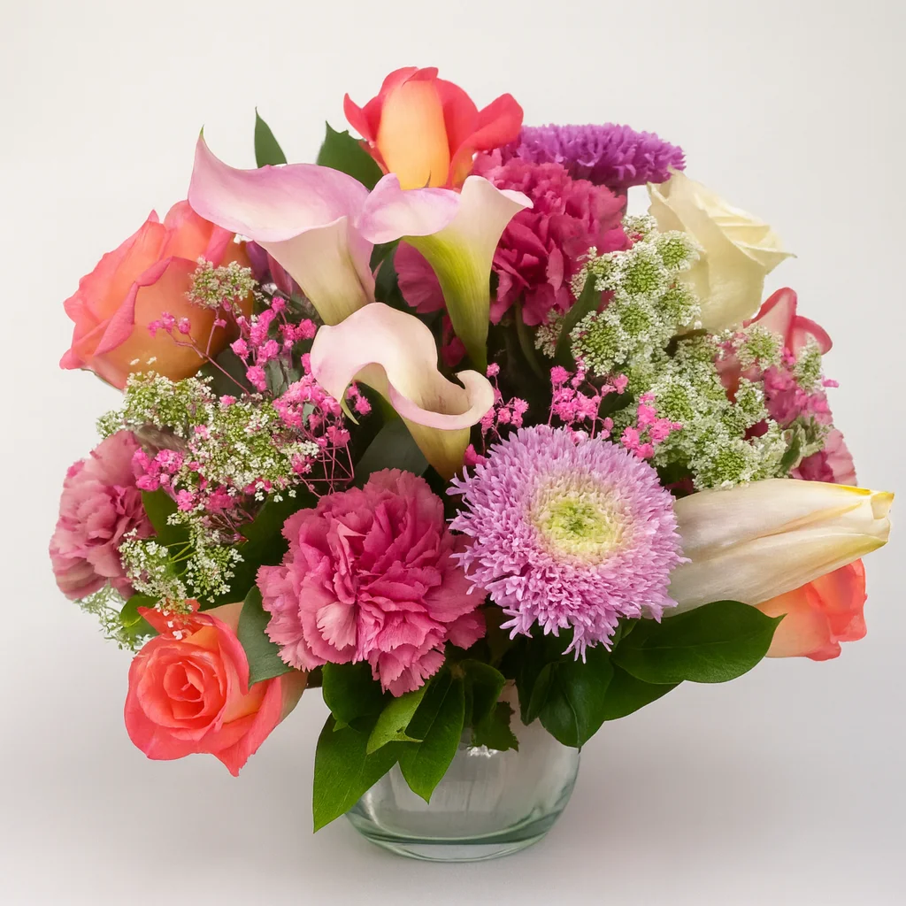
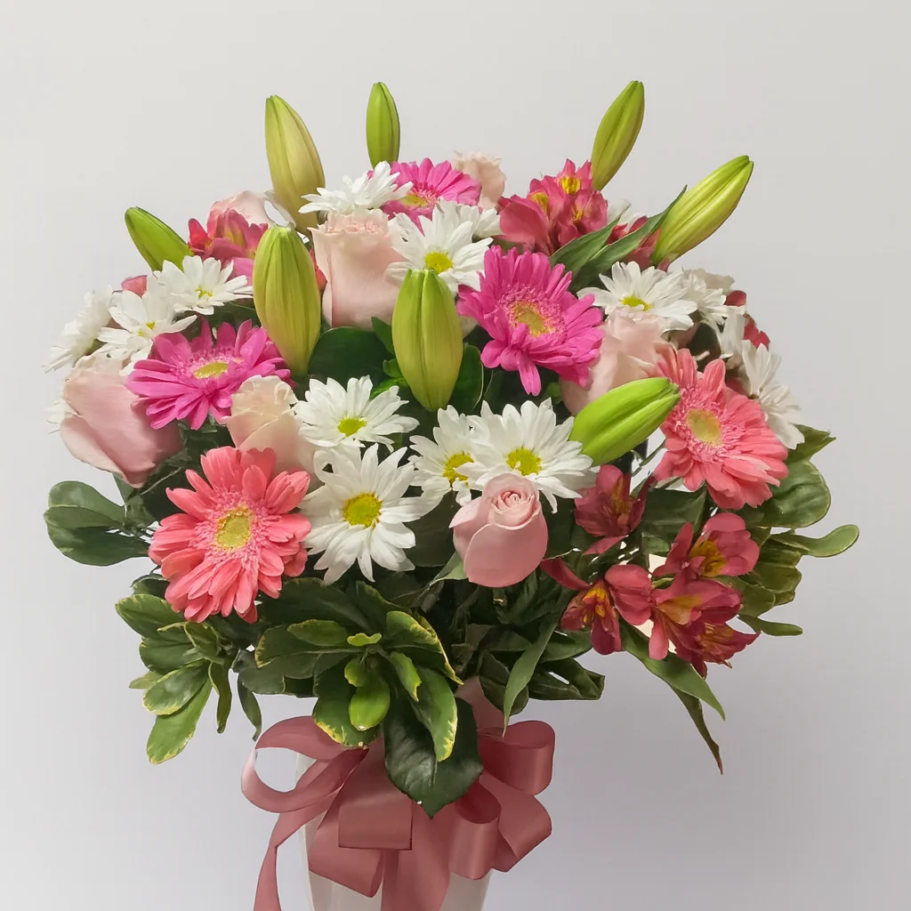

Ramos de Flores Secas
Los ramos de flores secas que preparamos son piezas de larga duración, elaboradas con flores conservadas de forma natural que mantienen su encanto por años. Diseñamos cada uno con esmero, aplicando métodos artesanales de secado que respetan el color y la silueta original de cada flor. Son ideales para decorar de manera permanente tu casa, tu oficina o tu local, y no piden agua ni atenciones especiales: solo que los contemples. Manejamos estilos variados, de los más románticos a los más modernos, con lavanda, eucalipto, pampas, estatice y rosas secas. Ninguna pieza es igual a otra y puedes ajustarla a tus gustos de color y tamaño, así que se convierte en una inversión decorativa que dura en el tiempo.

Coronas de Flores Secas
Las coronas de flores secas de Únicas son piezas circulares pensadas para vestir puertas, muros y rincones especiales. Las armamos con materiales naturales preservados, y cada una es una pequeña obra de arte que mezcla texturas, tonos y aromas delicados. Funcionan tanto para decorar por temporadas como de forma permanente, e incorporan ramas de eucalipto, lavanda, pampas grass y otros elementos naturales escogidos con cuidado. Son perfectas para recibir a tus visitas con estilo, darle calidez a un ambiente o adornar un evento especial. Puedes personalizarlas con cintas, detalles adicionales y el tamaño que mejor se ajuste al lugar donde irán. Gracias a su gran durabilidad, son una opción ecológica y económica frente a la decoración tradicional.
Centros de Mesa con Flores Secas
Los centros de mesa con flores secas que diseñamos son arreglos sofisticados, ideales para celebraciones, eventos especiales y para decorar tu casa de forma permanente. Al crearlos cuidamos el equilibrio entre colores, alturas y texturas, de modo que resulten llamativos sin estorbar la conversación entre los invitados. Partimos de bases elegantes en cristal, madera natural o cerámica artesanal y las completamos con una cuidadosa selección de flores secas, ramas y elementos naturales. Son perfectos para matrimonios, aniversarios, cenas de empresa o, sencillamente, para lucir tu comedor todos los días. Adaptamos cada arreglo al estilo de tu evento o de tu decoración, del rústico campestre al contemporáneo más elegante, para que se convierta en el protagonista de cualquier mesa.


Flores Secas en Jarrón
Los arreglos de flores secas en jarrón son una propuesta decorativa completa, lista para embellecer tu espacio desde el primer momento. Cada uno llega en un jarrón elegido con cuidado para armonizar con las flores, de manera que el conjunto resulta coherente y elegante. Están pensados para quienes quieren decorar al instante y sin complicaciones, uniendo lo práctico con el buen gusto. Según el estilo que busques, trabajamos con jarrones de vidrio soplado, cerámica artesanal, mimbre natural o metal envejecido. Las composiciones combinan pampas, eucalipto, lavanda, trigo seco y flores preservadas que conservan su forma y su color durante años. Son ideales para oficinas, consultorios, salas de espera, habitaciones o cualquier lugar que pida un toque natural y sofisticado sin necesidad de mantenimiento.